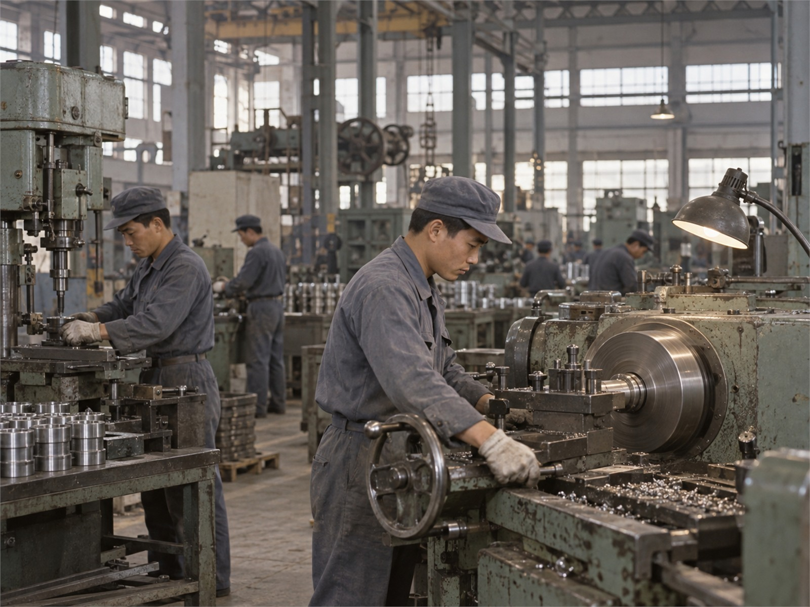
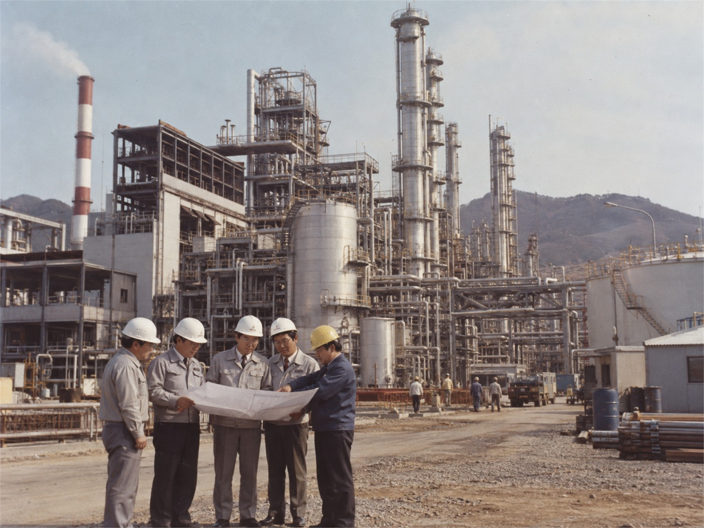
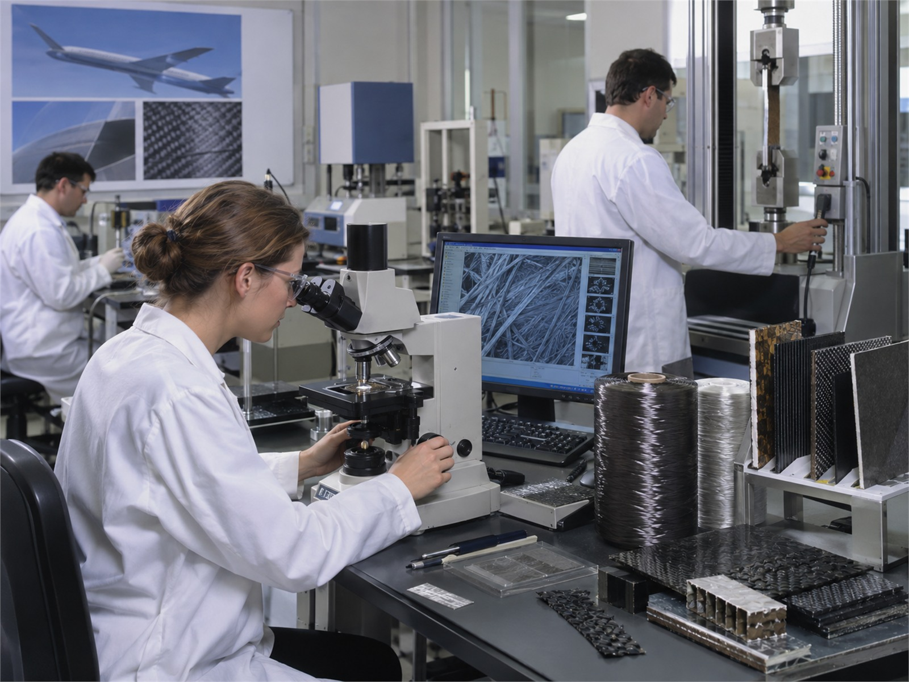
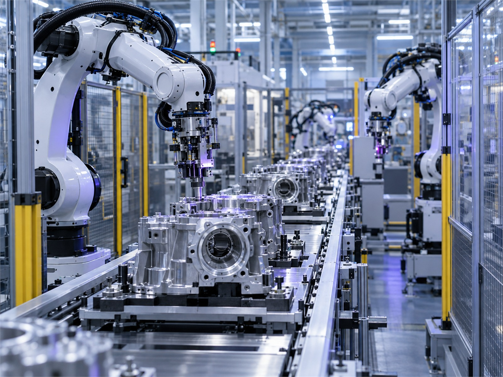
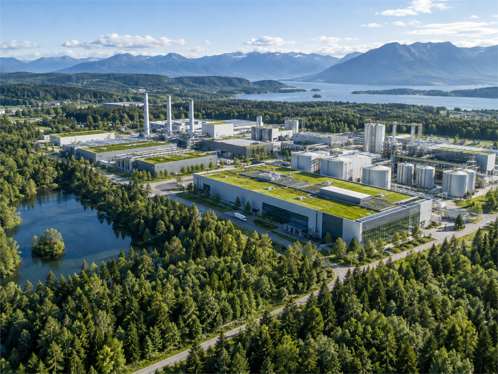

NEXORA
1966 · FOUNDATION
산업소재 기술 연구 시작
- 기술 자립
- 글로벌 확장
- 지속가능한 성장
핵심 기술을 축적하고 글로벌 현장에서 검증해 온 주요 성과입니다.

산업소재 기술 연구 시작

첫 통합 생산기지 가동

해외 판매 법인 설립

독자 고강도 소재 개발

글로벌 생산 네트워크 확대
친환경 공정 전환 시작
스마트팩토리 플랫폼 구축
글로벌 R&D 얼라이언스 출범
순환 원료 상용화
저탄소 기술 포트폴리오 확대